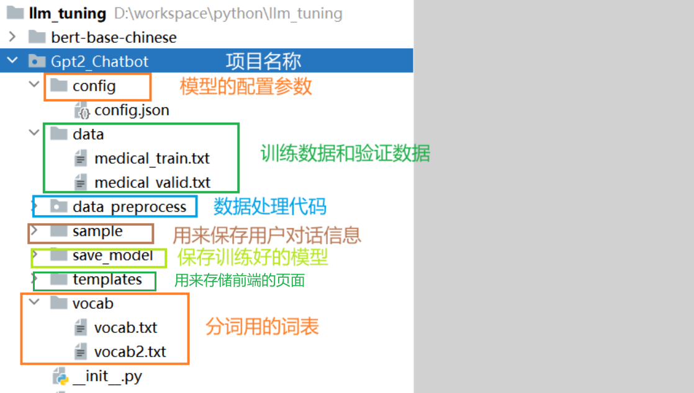

基于GPT2搭建医疗问诊机器人¶
学习目标¶
- 理解医疗问诊机器人的开发背景.
- 了解企业中聊天机器人的应用场景
- 掌握基于GPT2模型搭建医疗问诊机器人的实现过程
1. 项目介绍¶
1.1 项目背景¶
-
聊天机器人是一种基于自然语言处理技术的智能对话系统，能够模拟人类的自然语言交流，与用户进行对话和互动。聊天机器人能够理解用户的问题或指令，并给出相应的回答或建议。其目标是提供友好、智能、自然的对话体验.
-
当前，聊天机器人在多个领域得到广泛应用。首先，它们常用于在线客服系统，能够快速、准确地回答用户的常见问题，解决疑问。其次，聊天机器人可以作为个人助手，提供个性化的推荐、建议和日程安排等服务，提升用户体验。此外，聊天机器人还被应用于社交娱乐、语言学习、旅游指南等领域，为用户提供有趣、便捷的对话体验.
- 常见的相关聊天机器人产品：

微软小冰：微软公司开发。它具备自然语言处理、情感分析和对话生成等功能，能够与用户进行智能对话，提供情感支持和娱乐等服务。
阿里云小蜜：阿里云公司推出，提供了丰富的智能对话服务。它具备自然语言处理和对话管理能力，支持多领域的应用场景，如在线客服、智能助手和虚拟导购等。
百度智能云小度：百度智能云开发，提供了多领域的智能对话能力。小度机器人可应用于家庭助理、智能音箱和移动应用等场景，通过语音和文本交互与用户进行智能对话，提供信息查询、音乐播放和日程安排等功能。
本项目**基于医疗领域数据构建了智能医疗问答系统**，目的是为为用户提供准确、高效、优质的医疗问答服务。
1.2 环境准备¶
- python==3.10
- transformers==4.40.2
- torch==2.5.1+cu121
1.3 项目整体结构¶
整体代码结构：

2. 数据处理¶
2.1 数据介绍¶
- 数据存放位置：llm_tuning/Gpt2_Chatbot/data
- data文件夹中存有原始训练语料为train.txt。train.txt的格式如下，每段闲聊之间间隔一行，格式如下：
帕金森叠加综合征的辅助治疗有些什么？
综合治疗；康复训练；生活护理指导；低频重复经颅磁刺激治疗
卵巢癌肉瘤的影像学检查有些什么？
超声漏诊；声像图；MR检查；肿物超声；术前超声；CT检查
2.2 数据处理¶
- 目的：将中文文本数据处理成模型能够识别的张量形式，并将上述文本进行张量的转换
- 实现过程：
- 运行preprocess.py，对data/train.txt对话语料进行tokenize，然后进行序列化保存到data/train.pkl。train.pkl中序列化的对象的类型为List[List],记录对话列表中,每个对话包含的token。
2.2.1 配置文件¶
- 代码路径：llm_tuning/Gpt2_Chatbot/parameter_config.py
import torch
import os
base_dir = os.path.dirname(os.path.abspath(__file__))
# print(f'base_dir-->{base_dir}')
class ParameterConfig():
def __init__(self):
self.device = torch.device('cuda' if torch.cuda.is_available() else 'cpu')
# self.device = torch.device('mps' if torch.cuda.is_available() else 'cpu')
# 词典路径：在vocab文件夹里面
self.vocab_path = os.path.join(base_dir, 'vocab/vocab.txt')
# 训练文件路径
self.train_path = os.path.join(base_dir, 'data/medical_train.pkl')
# 验证数据文件路径
self.valid_path = os.path.join(base_dir, 'data/medical_valid.pkl')
# 模型配置文件
self.config_json = os.path.join(base_dir, 'config/config.json')
# 模型保存路径
self.save_model_path = os.path.join(base_dir, 'save_model')
# 如果你有预训练模型就写上路径（我们本次没有直接运用GPT2预训练好的模型，而是仅只用了该模型的框架）
self.pretrained_model = ''
# 保存对话语料
self.save_samples_path = os.path.join(base_dir, 'sample')
# 忽略一些字符：句子需要长度补齐，针对补的部分，没有意义，所以一般不进行梯度更新
self.ignore_index = -100
# 历史对话句子的长度
self.max_history_len = 3 # "dialogue history的最大长度"
# 每一个完整对话的句子最大长度
self.max_len = 300 # '每个utterance的最大长度,超过指定长度则进行截断,默认25'
self.repetition_penalty = 5.0 # "重复惩罚参数，若生成的对话重复性较高，可适当提高该参数"
self.topk = 2 # '保留概率最高的topk个token。默认4'
self.topp = 0.7 # '保留累积概率top个token。默认0.7'
self.batch_size = 8 # 一个批次几个样本
self.epochs = 4 # 训练几轮
self.loss_step = 100 # 多少步汇报一次loss
self.lr = 2.6e-5
# eps，为了增加数值计算的稳定性而加到分母里的项，其为了防止在实现中除以零
self.eps = 1.0e-09
self.max_grad_norm = 2.0
self.gradient_accumulation_steps = 4 # 梯度累积的步数
# 使用Warmup预热学习率的方式,即先用最初的小学习率训练，然后每个step增大一点点，直到达到最初设置的比较大的学习率时（注：此时预热学习率完成），采用最初设置的学习率进行训练（注：预热学习率完成后的训练过程，学习率是衰减的），有助于使模型收敛速度变快，效果更佳。默认.warmup_steps = 4000
self.warmup_steps = 100
if __name__ == '__main__':
pc = ParameterConfig()
print(pc.train_path)
print(pc.device)
2.2.1 数据张量转换¶
- 代码路径：llm_tuning/Gpt2_Chatbot/data_preprocess/preprocess.py
from transformers import BertTokenizerFast, BertTokenizer
import pickle # 保存pkl文件的命令
from tqdm import tqdm # 加载进度条
def data_preprocess(train_txt_path, train_pkl_path):
"""
对原始语料进行tokenizer，将每段对话处理成如下形式："[CLS]sentence1[SEP]sentence2[SEP]sentence3[SEP]"
"""
# BertTokenizerFast相比BertTokenizer，速度更快，并且提供了 字节级别精确对齐 的 offset mapping（可以知道 token 对应原始文本的字符位置
# tokenizer = BertTokenizerFast.from_pretrained(r'D:\workspace\python\llm_tuning\bert-base-chinese')
tokenizer = BertTokenizerFast('../vocab/vocab.txt',
sep_token="[SEP]",
pad_token="[PAD]",
cls_token="[CLS]")
# print(f'tokenizer.vocab_size-->{tokenizer.vocab_size}')
sep_id = tokenizer.sep_token_id # 获取分隔符[SEP]的token ID
cls_id = tokenizer.cls_token_id # 获取起始符[CLS]的token ID
# print(f'sep_id-->{sep_id}')
# print(f'cls_id-->{cls_id}')
# 读取训练数据集
with open(train_txt_path, "r", encoding="utf-8") as f:
data = f.read()
# print(f'data-->{data}')
# 根据换行符区分不同的对话段落，需要区分Windows和Linux\mac环境下的换行符
if "\r\n" in data:
train_data = data.split("\r\n\r\n")
else:
train_data = data.split("\n\n")
# print(f'len(train_data)-->{len(train_data)}') # 打印对话段落数量
# print(f'train_data[:2]-->{train_data[:2]}')
# 保存所有的对话数据,每条数据的格式为："[CLS]seq1[SEP]seq2[SEP]seq3[SEP]"
dialogue_len = [] # 记录所有对话tokenize分词之后的长度，用于统计中位数与均值
dialogue_list = [] # 记录所有对话
# 遍历训练数据，其中enumerate用于获取每个对话的索引和内容，tqdm用于显示进度条
for index, dialogue in enumerate(tqdm(train_data)):
# 根据不同的换行符分割对话，以处理数据集中的不一致性
if "\r\n" in dialogue:
sequences = dialogue.split("\r\n")
else:
sequences = dialogue.split("\n")
# print(f'sequences-->{sequences}')
# 初始化input_ids列表，用于存储所有对话的tokenized版本, 每个dialogue以[CLS]seq1[sep]seq2[sep]
input_ids = [cls_id]
for sequence in sequences:
# 将每个对话句子进行tokenize，并将结果拼接到input_ids列表中
input_ids += tokenizer.encode(sequence, add_special_tokens=False)
# 每个seq之后添加[SEP]，表示seqs会话结束
input_ids.append(sep_id)
# print(f'input_ids-->{input_ids}')
# 将对话的tokenize后的长度添加到对话长度列表中
dialogue_len.append(len(input_ids))
# 将tokenize后的对话添加到对话列表中
dialogue_list.append(input_ids)
# break
# print(f'dialogue_list-->{dialogue_list}')
print(f'dialogue_len-->{sum(dialogue_len)/len(dialogue_len)}')
# 保存对话列表数据到训练数据的pickle文件中
with open(train_pkl_path, "wb") as f:
pickle.dump(dialogue_list, f)
if __name__ == '__main__':
train_txt_path = '../data/medical_train.txt'
train_pkl_path = '../data/medical_train.pkl'
data_preprocess(train_txt_path, train_pkl_path)
valid_txt_path = '../data/medical_valid.txt'
valid_pkl_path = '../data/medical_valid.pkl'
data_preprocess(valid_txt_path, valid_pkl_path)
2.2.2 获取dataloader¶
（1）封装Dataset对象¶
- 代码路径：llm_tuning/Gpt2_Chatbot/data_preprocess/dataset.py
from torch.utils.data import Dataset # 导入Dataset模块，用于定义自定义数据集
import torch # 导入torch模块，用于处理张量和构建神经网络
import pickle
# 自定义数据集类，继承自Dataset类
class MyDataset(Dataset):
def __init__(self, input_list, max_len):
"""
初始化函数，用于设置数据集的属性
:param input_list: 输入列表，包含所有对话的tokenize后的输入序列
:param max_len: 最大序列长度，用于对输入进行截断或填充
"""
super().__init__()
self.input_list = input_list # 将输入列表赋值给数据集的input_list属性
self.max_len = max_len # 将最大序列长度赋值给数据集的max_len属性
def __len__(self):
return len(self.input_list) # 返回数据集的长度
def __getitem__(self, index):
input_ids = self.input_list[index] # 获取给定索引处的输入序列
# print(f'input_ids-->{input_ids}')
# 根据最大序列长度对输入进行截断或填充（填充逻辑在dataloader文件中实现）
input_ids = input_ids[:self.max_len] # 截断
input_ids = torch.tensor(input_ids, dtype=torch.long) # 将输入序列转换为张量long类型
return input_ids # 返回样本的输入序列张量
if __name__ == '__main__':
with open('../data/medical_train.pkl', "rb") as f:
train_input_list = pickle.load(f) # 从文件中加载输入列
print(f'train_input_list-->{len(train_input_list)}')
print(f'train_input_list-->{type(train_input_list)}')
print(f'train_input_list-->{train_input_list[0]}')
mydataset = MyDataset(input_list=train_input_list, max_len=300)
print(f'mydataset-->{len(mydataset)}')
result = mydataset[0]
print(result)
（2）封装DataLoader对象¶
- 代码路径：/home/user/ProjectStudy/Gpt2_Chatbot/data_preprocess/dataloader.py
import torch.nn.utils.rnn as rnn_utils # 导入rnn_utils模块，用于处理可变长度序列的填充和排序
from torch.utils.data import Dataset, DataLoader # 导入Dataset和DataLoader模块，用于加载和处理数据集
import pickle # 导入pickle模块，用于序列化和反序列化Python对象
from Gpt2_Chatbot.data_preprocess.dataset import MyDataset
from Gpt2_Chatbot.parameter_config import ParameterConfig
params = ParameterConfig()
def load_dataset(train_path, valid_path):
"""
加载训练集和验证集
:param train_path: 训练数据集路径
:return: 训练数据集和验证数据集
"""
with open(train_path, "rb") as f:
train_input_list = pickle.load(f) # 从文件中加载输入列表
with open(valid_path, "rb") as f:
valid_input_list = pickle.load(f) # 从文件中加载输入列表
# 划分训练集与验证集
# print(len(train_input_list)) # 打印输入列表的长度
# print(train_input_list[0])
train_dataset = MyDataset(train_input_list, params.max_len) # 创建训练数据集对象
val_dataset = MyDataset(valid_input_list, params.max_len) # 创建验证数据集对象
return train_dataset, val_dataset # 返回训练数据集和验证数据集
def collate_fn(batch):
"""
自定义的collate_fn函数，用于将数据集中的样本进行批处理
:param batch: 样本列表
:return: 经过填充的输入序列张量和标签序列张量
"""
# 对输入序列进行填充，使其长度一致
# rnn_utils.pad_sequence：将根据一个batch中，最大句子长度，进行补齐
# 参数batch_first=True表示返回的张量形状为(batch_size, max_seq_length)
input_ids = rnn_utils.pad_sequence(batch, batch_first=True, padding_value=0)
# 对标签序列进行填充, 使其长度一致, 用-100进行填充(计算损失值会忽略-100)
# 后续计算损失时, 预测的标签和真实的标签需要进行错一位(input_ids和labels一样)
labels = rnn_utils.pad_sequence(batch, batch_first=True, padding_value=-100)
# print(f'labels-->{labels}')
return input_ids, labels # 返回经过填充的输入序列张量和标签序列张量
def get_dataloader(train_path, valid_path):
"""
获取训练数据集和验证数据集的DataLoader对象
:param train_path: 训练数据集路径
:param valid_path: 验证数据集路径
:return: 训练数据集的DataLoader对象和验证数据集的DataLoader对象
"""
train_dataset, val_dataset = load_dataset(train_path, valid_path) # 加载训练数据集和验证数据集
# print(f'train_dataset-->{len(train_dataset)}')
# print(f'val_dataset-->{len(val_dataset)}')
# 创建训练数据集的DataLoader对象
train_dataloader = DataLoader(train_dataset,
batch_size=params.batch_size,
shuffle=False,
collate_fn=collate_fn,
drop_last=True)
# 创建验证数据集的DataLoader对象
validate_dataloader = DataLoader(val_dataset,
batch_size=params.batch_size,
shuffle=True,
collate_fn=collate_fn,
drop_last=True)
# 返回训练数据集的DataLoader对象和验证数据集的DataLoader对象
return train_dataloader, validate_dataloader
if __name__ == '__main__':
train_dataloader, validate_dataloader = get_dataloader(params.train_path, params.valid_path)
for input_ids, labels in train_dataloader:
print(f'input_ids-->{input_ids.shape}')
print(f'labels-->{labels.shape}')
break
3. 模型搭建¶
3.1 模型架构介绍¶
-
模型架构解析：
- 输入层：词嵌入层：WordEmbedding +位置嵌入层：PositionEmbedding
- 中间层：Transformer的Decoder模块---12层
- 输出层：线性全连接层
-
模型主要参数简介(详见模型的config.json文件):
- n_embd: 768
- n_head: 12
- n_layer: 12
- n_positions: 1024
- vocab_size: 13317
3.2 GPT2模型准备¶
- 本次项目使用GPT2的预训练模型，因此不需要额外搭建Model类，下面代码是如何直接加载使用GPT2预训练模型
- 代码示例:
from transformers import GPT2LMHeadModel, GPT2Config
# 创建模型
if params.pretrained_model:
# 加载预训练模型
model = GPT2LMHeadModel.from_pretrained(params.pretrained_model)
else:
# 初始化模型
model_config = GPT2Config.from_json_file(params.config_json)
model = GPT2LMHeadModel(config=model_config)
- 如果使用第二种方式，需要配置模型的参数
位置：llm_tuning/Gpt2_Chatbot/config/config.json
{
"activation_function": "gelu_new",
"architectures": [
"GPT2LMHeadModel"
],
"attn_pdrop": 0.1,
"bos_token_id": 50256,
"embd_pdrop": 0.1,
"eos_token_id": 50256,
"gradient_checkpointing": false,
"initializer_range": 0.02,
"layer_norm_epsilon": 1e-05,
"model_type": "gpt2",
"n_ctx": 1024,
"n_embd": 768,
"n_head": 12,
"n_inner": null,
"n_layer": 12,
"n_positions": 1024,
"output_past": true,
"resid_pdrop": 0.1,
"summary_activation": null,
"summary_first_dropout": 0.1,
"summary_proj_to_labels": true,
"summary_type": "cls_index",
"summary_use_proj": true,
"task_specific_params": {
"text-generation": {
"do_sample": true,
"max_length": 400
}
},
"tokenizer_class": "BertTokenizer",
"transformers_version": "4.2.0",
"use_cache": true,
"vocab_size": 13317
}
4. 模型训练和验证¶
- 主要代码

-
代码位置
-
训练主函数：llm_tuning/Gpt2_Chatbot/train.py
-
辅助工具类：llm_tuning/Gpt2_Chatbot/functions_tools.py
- trian.py代码解析
import torch
import os
from datetime import datetime
from torch.optim import AdamW
from tqdm import tqdm
from transformers import GPT2LMHeadModel, GPT2Config, BertTokenizerFast
from transformers import get_linear_schedule_with_warmup
from Gpt2_Chatbot.data_preprocess.dataloader import get_dataloader
from Gpt2_Chatbot.functions_tools import calculate_acc
from Gpt2_Chatbot.parameter_config import ParameterConfig
def train_epoch(model, train_dataloader, optimizer, scheduler, epoch, args):
'''
:param model: GPT2模型
:param train_dataloader: 训练数据集
:param optimizer: 优化器：更新参数
:param scheduler: 学习率预热
:param epoch: 当前的轮次
:param args: 模型配置文件的参数对象
:return: 每次迭代的平均损失值
'''
print("start training...")
# 指明模型训练
model.train()
device = args.device
# 对于ignore_index的label token不计算梯度
ignore_index = args.ignore_index
epoch_start_time = datetime.now()
total_loss = 0 # 记录下整个epoch的loss的总和
# epoch_correct_num: 每个epoch中,output预测正确的word的数量
# epoch_total_num: 每个epoch中,output预测的word的总数量
epoch_correct_num, epoch_total_num = 0, 0
for batch_idx, (input_ids, labels) in enumerate(tqdm(train_dataloader)):
input_ids = input_ids.to(device)
labels = labels.to(device)
# print(f'input_ids-->{input_ids.shape}')
# print(f'labels-->{labels.shape}')
# 如果对模型输入不仅包含input还包含标签，那么得到结果直接就有loss值。其中模型内部会把 logits/labels 做位移对齐（labels 通常可以等于 input_ids， 模型内部会把 logits[..., :-1, :] 与 labels[..., 1:] 对齐计算损失），并对被标为 -100 的 label 忽略不计。
# 如果对模型的输入只有input，那么模型的结果不会含有loss值，此时，可以自定义函数来计算损失
outputs = model(input_ids, labels=labels)
# print(f'outputs-->{outputs}')
# print(f'outputs-->{outputs.keys()}')
# print(f'outputs.logits-->{outputs.logits.shape}')
# print(f'outputs.loss-->{outputs.loss}')
logits = outputs.logits
loss = outputs.loss
# 累加当前损失到总损失中
total_loss += loss.item()
# 统计该batch的预测token的正确数与总数
batch_correct_num, batch_total_num = calculate_acc(logits,
labels,
ignore_index=ignore_index)
# print(f'batch_correct_num-->{batch_correct_num}')
# print(f'batch_total_num-->{batch_total_num}')
# 计算该batch的accuracy
batch_acc = batch_correct_num / batch_total_num
# 统计该epoch的预测token的正确数与总数
epoch_correct_num += batch_correct_num
epoch_total_num += batch_total_num
'''
self.gradient_accumulation_steps = 4 累积的步数
如果设置了梯度累积步数且大于1，则需要对损失进行相应的调整
这是因为在累积步数内，损失会被累积计算，而不是在每个训练步骤后立即更新权重
通过将损失除以梯度累积步数，可以得到每次累积后实际应该应用的平均损失
'''
if args.gradient_accumulation_steps > 1:
loss = loss / args.gradient_accumulation_steps
loss.backward()
torch.nn.utils.clip_grad_norm_(parameters=model.parameters(), max_norm=args.max_grad_norm)
# 在到达梯度累计的步数之后，执行参数更新
if (batch_idx + 1) % args.gradient_accumulation_steps == 0:
# 更新参数
optimizer.step()
# 更新学习率
scheduler.step()
# 清空梯度信息
optimizer.zero_grad()
# 当batch_idx加1能被args.loss_step整除时，输出当前批次的训练信息
if (batch_idx + 1) % args.loss_step == 0:
print(
"batch {} of epoch {}, loss {:.4f}, batch_acc {:.4f}, lr {}".format(
batch_idx + 1, epoch + 1, loss.item() * args.gradient_accumulation_steps,
batch_acc, scheduler.get_last_lr()[0]))
# break
# 记录当前epoch的平均loss与accuracy
epoch_mean_loss = total_loss / len(train_dataloader)
epoch_mean_acc = epoch_correct_num / epoch_total_num
print("epoch {}: loss {:.4f}, predict_acc {:.4f}".format(epoch + 1, epoch_mean_loss, epoch_mean_acc))
# 在每个epoch结束时，根据条件保存模型
if (epoch + 1) % 2 == 0 or epoch == args.epochs:
# 打印保存模型的信息
print('正在保存第 {} 轮次模型'.format(epoch + 1))
# 构造模型保存路径
model_path = os.path.join(args.save_model_path, 'bj_epoch{}'.format(epoch + 1))
# 如果模型保存路径不存在，则创建该目录
if not os.path.exists(model_path):
os.mkdir(model_path)
# 保存预训练模型的方式
model.save_pretrained(model_path)
# 打印完成信息
print('第 {} 轮次模型保存完成。'.format(epoch + 1))
# 记录epoch完成的时间
epoch_finish_time = datetime.now()
# 打印完成该轮次所需的时间
print('完成本轮次所花时间为: {:.4f}'.format(epoch_finish_time - epoch_start_time))
return epoch_mean_loss
def validate_epoch(model, validate_dataloader, epoch, args):
'''
验证模型在一个epoch上的表现。
:param model: 要验证的模型
:param validate_dataloader: 验证数据加载器
:param epoch: 当前验证的epoch数
:param args: 包含设备信息等的参数对象
:return: 当前epoch的平均损失
'''
print("start validating...")
model.eval() # 将模型设置为评估模式
device = args.device # 获取设备信息
epoch_start_time = datetime.now() # 记录epoch开始时间
total_loss = 0 # 初始化总损失
# 捕获cuda out of memory exception
with torch.no_grad(): # 禁止计算梯度以节省内存
for batch_idx, (input_ids, labels) in enumerate(tqdm(validate_dataloader)):
input_ids = input_ids.to(device) # 将输入数据移动到指定设备
labels = labels.to(device) # 将标签移动到指定设备
outputs = model(input_ids, labels=labels) # 模型前向传播
# logits = outputs.logits
loss = outputs.loss # 获取损失
total_loss += loss.item() # 累加损失
# 记录当前epoch的平均loss
epoch_mean_loss = total_loss / len(validate_dataloader) # 计算平均损失
print("第 {} 轮的模型在验证集上的平均损失为：{:.4f}".format(epoch + 1, epoch_mean_loss))
epoch_finish_time = datetime.now() # 记录epoch结束时间
print('完成本轮次验证所花时间为: {:.4f}'.format(epoch_finish_time - epoch_start_time))
return epoch_mean_loss # 返回平均损失
def train(model, train_dataloader, validate_dataloader, args):
# eps，为了增加数值计算的稳定性而加到分母里的项，其为了防止在实现中除以零
optimizer = AdamW(model.parameters(), lr=args.lr, eps=args.eps)
# 这里使用学习率预热处理优化
# print(f'每个轮次中的批次数-->{len(train_dataloader)}')
# t_total为使用梯度累积时，模型训练完毕一共 更新参数的次数
t_total = len(train_dataloader) // args.gradient_accumulation_steps * args.epochs
scheduler = get_linear_schedule_with_warmup(optimizer,
num_warmup_steps=args.warmup_steps,
num_training_steps=t_total)
# 用于记录每个epoch训练和验证的loss
train_losses, validate_losses = [], []
# 记录验证集的最小loss
best_val_loss = 10000
# 开始训练
for epoch in range(args.epochs):
# ========== train ========== #
train_loss = train_epoch(
model=model, train_dataloader=train_dataloader,
optimizer=optimizer, scheduler=scheduler,
epoch=epoch, args=args)
train_losses.append(train_loss)
# ========== validate ========== #
validate_loss = validate_epoch(
model=model, validate_dataloader=validate_dataloader,
epoch=epoch, args=args)
validate_losses.append(validate_loss)
# 保存当前损失最低的模型
if validate_loss < best_val_loss:
best_val_loss = validate_loss
print('保存当前最好的模型，轮次为 epoch {}'.format(epoch + 1))
model_path = os.path.join(args.save_model_path, 'min_loss_model_bj'.format(epoch + 1))
if not os.path.exists(model_path):
os.mkdir(model_path)
model.save_pretrained(model_path)
def run():
# 初始化配置参数
params = ParameterConfig()
# 设置使用哪些显卡进行训练:默认为0
# 如果你的电脑有大于1张的显卡，可以选择使用
# nvidia-smi:查询当前显卡的状态：4090(16G显存), L40(48G显存), L20(24G显存), A100(80G), H100(80G), T4(16G), V100(16G)
# os.environ["CUDA_VISIBLE_DEVICES"] = '0'数字0代表你的第一张显卡
# os.environ["CUDA_VISIBLE_DEVICES"] = '1'数字1代表你的第二张显卡
# os.environ["CUDA_VISIBLE_DEVICES"] ='0, 1'代表同时利用0和1两张显卡
os.environ["CUDA_VISIBLE_DEVICES"] = '0' # 指定第一张显卡
# 初始化tokenizer
tokenizer = BertTokenizerFast(params.vocab_path,
sep_token="[SEP]",
pad_token="[PAD]",
cls_token="[CLS]")
# 创建模型的输出目录
# 如果没有创建会自动的创建输出目录
if not os.path.exists(params.save_model_path):
os.mkdir(params.save_model_path)
# 根据参数决定模型的创建方式
if params.pretrained_model: # 如果提供了预训练模型的路径
# 加载预训练模型
model = GPT2LMHeadModel.from_pretrained(params.pretrained_model)
else: # 如果没有提供预训练模型的路径
# 从JSON文件中加载模型配置
model_config = GPT2Config.from_json_file(params.config_json)
# print(model_config) 用于调试，查看模型配置
# 根据配置初始化模型
model = GPT2LMHeadModel(config=model_config)
# print(f'model-->{model}') 用于调试，查看模型结构
# 将模型移动到指定的设备上（如GPU）
model = model.to(params.device)
# print(f'model.config.vocab_size-->{model.config.vocab_size}')
# print(f'tokenizer.vocab_size-->{tokenizer.vocab_size}')
# 确认模型的词汇表大小与分词器的词汇表大小一致
assert model.config.vocab_size == tokenizer.vocab_size
# 初始化模型参数数量为0
num_parameters = 0
# 获取模型的所有参数
parameters = model.parameters()
# 遍历每一项参数
for parameter in parameters:
# 将每一项参数的元素数量累加到总参数量中
num_parameters += parameter.numel()
# 打印模型的总参数量
print(f'模型参数总量---》{num_parameters}')
# 加载训练集和验证集
train_dataloader, validate_dataloader = get_dataloader(params.train_path, params.valid_path)
print(f'train_dataloader-->{len(train_dataloader)}')
print(f'validate_dataloader-->{len(validate_dataloader)}')
train(model, train_dataloader, validate_dataloader, params)
if __name__ == '__main__':
run()
- functions_tools.py代码解析
import torch
import torch.nn.functional as F
def calculate_acc(logit, labels, ignore_index=-100):
'''
计算模型预测的准确token和总token。
:param logit: 模型的预测输出
:param labels: 数据的真实标签
:param ignore_index: 指定一个索引，该索引对应的标签将被忽略，不会参与准确率的计算。默认值为-100。
:return: n_correct: 预测正确的token个数。
n_word: 非填充的总token个数。
'''
# 1.处理输入数据，去掉预测结果的最后一个字符，去掉标签的第一个字符
# print(f'logit--->原始值的形状{logit.shape}')
# print(f'labels--->原始值的形状{labels.shape}')
# print(f'logit.size-->{logit.size(-1)}')
# print(f'logit[:, :-1, :]-->{logit[:, :-1, :].shape}')
# :-1->去掉预测的结束符
logit = logit[:, :-1, :].contiguous().view(-1, logit.size(-1))
# print(f'logit改变完形状的--->{logit.shape}')
# print(f'labels[:, 1:]--->{labels[:, 1:].shape}')
# 1:->去掉标签的开始符, 实现错一位, logit和labels就能对应
labels = labels[:, 1:].contiguous().view(-1)
# print(f'labels改变完形状的--->{labels.shape}')
# 2.取出最大概率值以及对应索引
max_index = logit.argmax(dim=-1)
# print(f'logit取出模型预测最大索引值-->{max_index}')
# print(f'max_index.shape-->{max_index.shape}')
# 3.计算预测正确的token个数和总的token个数
'''
在 PyTorch 中，labels.ne(ignore_index) 表示将标签张量 labels 中的值不等于 ignore_index 的位置标记为 True，等于 ignore_index 的位置标记为 False。
这个操作，以过滤掉 ignore_index 对损失的影响
'''
# 进行非运算，返回一个tensor，若labels的第i个位置为pad_id，则置为0，否则为1
non_pad_mask = labels.ne(ignore_index)
# print(f'non_pad_mask-->{non_pad_mask}')
'''
在 PyTorch 中，logit.eq(labels) 表示将模型的预测输出值 max_index 中等于标签张量 labels 的位置标记为 True，
不等于标签张量 labels 的位置标记为 False。以标记出预测输出值和标签值相等的位置。
masked_select(non_pad_mask) 表示将张量中非填充标记的位置选出来。
'''
# print(f'max_index.eq(labels)--->{max_index.eq(labels).shape}')
# print(f'max_index.eq(labels)--->{ max_index.eq(labels)}')
# 计算预测正确的单词数量
n_correct = max_index.eq(labels).masked_select(non_pad_mask).sum().item()
# print(f'n_correct-->{n_correct}')
# 计算非填充单词的总数
n_word = non_pad_mask.sum().item()
# print(f'non_pad_mask.sum()-->{non_pad_mask.sum()}')
return n_correct, n_word
5. 模型预测（人机交互）¶
- 使用训练好的模型，进行人机交互，输入Ctrl+Z结束对话之后，聊天记录将保存到sample目录下的sample.txt文件中。
代码位置：llm_tuning/Gpt2_Chatbot/interact.py
import os
from datetime import datetime
import torch
from transformers import GPT2LMHeadModel, BertTokenizerFast
import torch.nn.functional as F
from Gpt2_Chatbot.parameter_config import ParameterConfig
def top_k_top_p_filtering(logits, top_k=0, top_p=0.0, filter_value=-float('Inf')):
'''
使用top-k和/或nucleus（top-p）筛选来过滤logits的分布
:param logits: 最后一个token的logits的分布，形状为（词汇大小）
:param top_k: top_k > 0: 保留概率最高的top k个token（top-k筛选）
:param top_p: top_p > 0.0: 保留累积概率大于等于top_p的top token（nucleus筛选）
:param filter_value: 极小值
:return: logits: 过滤后的logits分布，其中低概率标记被设置为filter_value。
'''
# 确保logits的维度为1，这里只处理批量大小为1的情况。
assert logits.dim() == 1
# 对top_k值进行安全性检查，防止它超过logits最后一个维度的大小，避免运行时错误。
top_k = min(top_k, logits.size(-1))
if top_k > 0:
# 移除概率小于top_k标记
# torch.topk()返回最后一维中最大的top_k个元素，返回值为二维(values, indices)
# print(f'torch.topk(logits, top_k)--->{torch.topk(logits, top_k)}')
# print(f'torch.topk(logits, top_k)[0]-->{torch.topk(logits, top_k)[0]}')
# print(f'torch.topk(logits, top_k)[0][-1]-->{torch.topk(logits, top_k)[0][-1]}')
# 判断logits的值，如果小于top_k标记，则设置为filter_value
indices_to_remove = logits < torch.topk(logits, top_k)[0][-1]
# print(f'indices_to_remove--->{indices_to_remove}')
# print(f'logits--->{logits}')
logits[indices_to_remove] = filter_value # 对于topk之外的其他元素的logits值设为负无穷
# print(f'logits--->{logits}')
if top_p > 0.0:
sorted_logits, sorted_indices = torch.sort(logits, descending=True) # 对logits进行递减排序
# print(f'sorted_logits-->{sorted_logits}')
# print(f'sorted_indices-->{sorted_indices}')
# F.softmax(sorted_logits, dim=-1)：将排序后的 logits 转为概率分布
# torch.cumsum(..., dim=-1)：计算累积概率
cumulative_probs = torch.cumsum(F.softmax(sorted_logits, dim=-1), dim=-1)
# 对应位置为 True 的 token 是 累积概率超过 top_p 阈值的 token，通常需要被移除
sorted_indices_to_remove = cumulative_probs > top_p
# 将索引向右移动，以确保即使第一个token超过阈值也能保留
sorted_indices_to_remove[..., 1:] = sorted_indices_to_remove[..., :-1].clone() # 将索引向右移动一位
sorted_indices_to_remove[..., 0] = 0 # 将第一个token设为False，确保第一个 token 被保留
# print(f'sorted_indices_to_remove--->{sorted_indices_to_remove}')
# 将需要移除的token设置为filter_value。
indices_to_remove = sorted_indices[sorted_indices_to_remove]
logits[indices_to_remove] = filter_value
# print(f'logits--->{logits}')
return logits
def main():
# 初始化参数配置对象
pconf = ParameterConfig()
# 根据CUDA的可用性选择使用GPU还是CPU
device = 'cuda' if torch.cuda.is_available() else 'cpu'
# 打印当前使用的设备
print('using device:{}'.format(device))
# 设置环境变量以使用第一个GPU设备
os.environ["CUDA_VISIBLE_DEVICES"] = '0'
# 初始化BERT tokenizer，指定词汇表路径和特殊令牌
tokenizer = BertTokenizerFast(vocab_file=pconf.vocab_path,
sep_token="[SEP]",
pad_token="[PAD]",
cls_token="[CLS]")
# 从预训练路径加载GPT-2模型
model_path = os.path.join(pconf.save_model_path, 'min_loss_model_bj')
model = GPT2LMHeadModel.from_pretrained(model_path).to(device)
# 将模型设置为评估模式
model.eval()
# 如果配置了保存聊天记录的文件路径，则创建文件夹和文件以保存聊天记录
if pconf.save_samples_path:
# 检查路径是否存在，如果不存在则创建
if not os.path.exists(pconf.save_samples_path):
os.makedirs(pconf.save_samples_path)
# 打开或创建一个名为'samples.txt'的文件，用于追加聊天记录
file_path = os.path.join(pconf.save_samples_path, 'samples.txt')
samples_file = open(file_path, 'a', encoding='utf8')
# 在文件中写入当前聊天记录的时间戳
samples_file.write("聊天记录{}:\n".format(datetime.now()))
# 初始化一个空列表用于存储聊天记录，聊天记录以token id的形式存储
history = []
# 打印欢迎语，介绍聊天机器人的身份
print('你好，我是您的健康助手')
while True:
try:
# 提示用户输入文本并存储
text = input("user:")
# print(f'text--->{text}')
# 如果配置了保存样本的路径，则将用户输入的文本写入样本文件
if pconf.save_samples_path:
samples_file.write("user:{}\n".format(text))
# 使用tokenizer将用户输入的文本转换为文本ID序列，不添加特殊令牌
text_ids = tokenizer.encode("用户问题：" + text, add_special_tokens=False)
print(f'text_ids-->{text_ids}')
# 将文本ID序列添加到历史对话列表中
history.append(text_ids)
print(f'history-->{history}')
# 初始化输入ID序列，每个输入以[CLS]令牌开始
input_ids = [tokenizer.cls_token_id]
print(f'input_ids-->{input_ids}')
print('*' * 80)
# pconf.max_history_len目的：将最近的历史消息记录送到模型
# 遍历历史记录，history_id用于记录索引，history_utr用于记录每个历史对话的token ID列表
# eg：history = [[872, 1962], [872, 1962], [872, 342, 123], [334, 55,234]]-->history[-3:]
for history_id, history_utr in enumerate(history[-pconf.max_history_len:]):
print(f'history_utr--->{history_utr}')
# 将历史对话的token ID列表添加到input_ids中
input_ids.extend(history_utr)
# 在每个历史对话的token ID列表之后添加分隔符token ID
input_ids.append(tokenizer.sep_token_id)
print(f'input_ids--->{input_ids}')
print(f'存储了历史对话的输入信息-->{input_ids}')
input_ids = torch.tensor(input_ids, dtype=torch.long, device=device)
# 将input_ids扩展为二维张量，形状为（1，input_ids长度）
input_ids = input_ids.unsqueeze(0)
print(f'符合模型的输入-->{input_ids.shape}')
# 初始化一个空列表response，用于存储生成的响应
response = [] # 根据context，生成的response
# 循环生成响应，次数由pconf.max_len决定
for _ in range(pconf.max_len):
# 使用模型生成输出
outputs = model(input_ids=input_ids)
# 获取模型输出的logits，即未经过softmax的预测值
logits = outputs.logits
print(f'logits--->{logits.shape}')
# 从logits中提取下一个token的概率值
next_token_logits = logits[0, -1, :]
print(f'next_token_logits---->{next_token_logits.shape}')
# 对于已生成的结果generated中的每个token添加一个重复惩罚项, 降低其生成概率(解决复读机问题)
# print(f'set(response)-->{set(response)}')
# 遍历响应中的每个标识符，以应用重复惩罚
for id in set(response):
# print(f'id--->{id}')
# 根据重复惩罚配置，调整标识符的下一次出现的logits值
if next_token_logits[id] < 0:
next_token_logits[id] *= pconf.repetition_penalty
else:
next_token_logits[id] /= pconf.repetition_penalty
# 对于[UNK]的概率设为无穷小，也就是说模型的预测结果不可能是[UNK]这个token
next_token_logits[tokenizer.convert_tokens_to_ids('[UNK]')] = -float('Inf')
# 这里使用了 top_k_top_p_filtering 函数，该函数的作用是根据给定的 top_k 参数和 top_p 参数，将不符合的token概率被设置为无穷小，从而选择出符合 k 个元素的下标和对应的值
# 这种方法可以在保证生成文本的质量的同时，具有一定的随机性
filtered_logits = top_k_top_p_filtering(next_token_logits, top_k=pconf.topk, top_p=pconf.topp)
# torch.multinomial表示从候选集合中无放回地进行抽取num_samples个元素，权重越高，抽到的几率越高，返回元素的下标
next_token = torch.multinomial(F.softmax(filtered_logits, dim=-1), num_samples=1)
# print(f'next_token-->{next_token}')
# 遇到[SEP]则表明response生成结束
if next_token.item() == tokenizer.sep_token_id:
break
# 将预测的下一个token的ID添加到响应序列中
response.append(next_token.item())
print(f'response-->{response}')
# 在输入ID序列中添加下一个token的ID，以便将其作为下一个预测步骤的输入
input_ids = torch.cat((input_ids, next_token.unsqueeze(0)), dim=1)
model_ids = tokenizer.encode("模型回答：", add_special_tokens=False)
# print(f'model_ids + response--->{model_ids + response}')
# 将机器人的响应添加到对话历史中
history.append(model_ids + response)
# 将响应从ID序列转换为文本
text = tokenizer.convert_ids_to_tokens(response)
# 打印机器人的回复
print("chatbot:" + "".join(text))
except KeyboardInterrupt:
break
if __name__ == '__main__':
main()
6. 基于Flask框架web开发(了解)¶
- 对interact.py进行调整, 去除while无限循环，由前端保存history，只需要对传入的句子进行预测即可。
代码位置：llm_tuning/Gpt2_Chatbot/flask_predict.py
import os
import torch
from transformers import GPT2LMHeadModel, BertTokenizerFast
import torch.nn.functional as F
from Gpt2_Chatbot.interact import top_k_top_p_filtering
from Gpt2_Chatbot.parameter_config import ParameterConfig
# 初始化参数配置对象
pconf = ParameterConfig()
# 根据CUDA的可用性选择使用GPU还是CPU
device = 'cuda' if torch.cuda.is_available() else 'cpu'
# 打印当前使用的设备
# print('using device:{}'.format(device))
# 设置环境变量以使用第一个GPU设备
os.environ["CUDA_VISIBLE_DEVICES"] = '0'
# 初始化BERT tokenizer，指定词汇表路径和特殊令牌
tokenizer = BertTokenizerFast(vocab_file=pconf.vocab_path,
sep_token="[SEP]",
pad_token="[PAD]",
cls_token="[CLS]")
# 从预训练路径加载GPT-2模型
model_path = os.path.join(pconf.save_model_path, 'min_loss_model_bj')
model = GPT2LMHeadModel.from_pretrained(model_path).to(device)
# 将模型设置为评估模式
model.eval()
# 模型预测函数，输入为用户输入的文本，返回预测结果
def model_predict(text, history):
# 使用tokenizer将用户输入的文本转换为文本ID序列，不添加特殊令牌
text_ids = tokenizer.encode("用户问题：" + text, add_special_tokens=False)
# print(f'text_ids-->{text_ids}')
# 将文本ID序列添加到历史对话列表中
history.append(text_ids)
# print(f'history-->{history}')
# 初始化输入ID序列，每个输入以[CLS]令牌开始
input_ids = [tokenizer.cls_token_id]
# print(f'input_ids-->{input_ids}')
# pconf.max_history_len目的：将最近的历史消息记录送到模型
# 遍历历史记录，history_id用于记录索引，history_utr用于记录每个历史对话的token ID列表
# eg：history = [[872, 1962], [872, 1962], [872, 342, 123], [334, 55,234]]-->history[-3:]
for history_id, history_utr in enumerate(history[-pconf.max_history_len:]):
# print(f'history_utr--->{history_utr}')
# 将历史对话的token ID列表添加到input_ids中
input_ids.extend(history_utr)
# 在每个历史对话的token ID列表之后添加分隔符token ID
input_ids.append(tokenizer.sep_token_id)
# print(f'input_ids--->{input_ids}')
# print(f'存储了历史对话的输入信息-->{input_ids}')
input_ids = torch.tensor(input_ids, dtype=torch.long, device=device)
# 将input_ids扩展为二维张量，形状为（1，input_ids长度）
input_ids = input_ids.unsqueeze(0)
# print(f'符合模型的输入-->{input_ids.shape}')
# 初始化一个空列表response，用于存储生成的响应
response = [] # 根据context，生成的response
# 循环生成响应，次数由pconf.max_len决定
for _ in range(pconf.max_len):
# 使用模型生成输出
outputs = model(input_ids=input_ids)
# 获取模型输出的logits，即未经过softmax的预测值
logits = outputs.logits
# print(f'logits--->{logits.shape}')
# 从logits中提取下一个token的概率值
next_token_logits = logits[0, -1, :]
# print(f'next_token_logits---->{next_token_logits.shape}')
# 对于已生成的结果generated中的每个token添加一个重复惩罚项, 降低其生成概率(解决复读机问题)
# print(f'set(response)-->{set(response)}')
# 遍历响应中的每个标识符，以应用重复惩罚
for id in set(response):
# print(f'id--->{id}')
# 根据重复惩罚配置，调整标识符的下一次出现的logits值
if next_token_logits[id] < 0:
next_token_logits[id] *= pconf.repetition_penalty
else:
next_token_logits[id] /= pconf.repetition_penalty
# 对于[UNK]的概率设为无穷小，也就是说模型的预测结果不可能是[UNK]这个token
next_token_logits[tokenizer.convert_tokens_to_ids('[UNK]')] = -float('Inf')
# 这里使用了 top_k_top_p_filtering 函数，该函数的作用是根据给定的 top_k 参数和 top_p 参数，将不符合的token概率被设置为无穷小，从而选择出符合 k 个元素的下标和对应的值
# 这种方法可以在保证生成文本的质量的同时，具有一定的随机性
filtered_logits = top_k_top_p_filtering(next_token_logits, top_k=pconf.topk, top_p=pconf.topp)
# torch.multinomial表示从候选集合中无放回地进行抽取num_samples个元素，权重越高，抽到的几率越高，返回元素的下标
next_token = torch.multinomial(F.softmax(filtered_logits, dim=-1), num_samples=1)
# print(f'next_token-->{next_token}')
# 遇到[SEP]则表明response生成结束
if next_token.item() == tokenizer.sep_token_id:
break
# 将预测的下一个token的ID添加到响应序列中
response.append(next_token.item())
# print(f'response-->{response}')
# 在输入ID序列中添加下一个token的ID，以便将其作为下一个预测步骤的输入
input_ids = torch.cat((input_ids, next_token.unsqueeze(0)), dim=1)
model_ids = tokenizer.encode("模型回答：", add_special_tokens=False)
# print(f'model_ids + response--->{model_ids + response}')
# 将机器人的响应添加到对话历史中
history.append(model_ids + response)
# 将响应从ID序列转换为文本
text = tokenizer.convert_ids_to_tokens(response)
# 打印机器人的回复
response = "".join(text)
return response, history
if __name__ == '__main__':
history = []
response, history = model_predict('你好', history)
print(f'response--->{response}')
print(f'history--->{history}')
response, history = model_predict('卵巢癌肉瘤的影像学检查有些什么', history)
print(f'response--->{response}')
print(f'history--->{history}')
- 基于Flask框架的web后端接口
这部分可以用大模型生成，写好提示词即可。
使用大模型生成web前后端代码, 描述如下:
现在你是一个代码专家, 目前已经训练好了一个模型, 并且已经将该模型进行了封装, 函数名为model_predict(), 该函数传入参数为text, history，其中text为用户问题，history为一个列表，用来保存上下文信息；返回值为response, history，其中response为预测结果，history为列表。
现在需要你基于Flask框架, 对该函数进行API接口封装制作, 并且希望能够制作一个简单的web界面, 界面的主要功能呈现如下:
1. 用户输入问题和history列表, 然后返回预测结果和history。这个history不需要前端往里边添加内容，只需要保存这个变量即可。在前端页面刷新时，这个变量清空为[]。
2. 将用户和模型的聊天信息保留在页面上展示
3. 页面标题名称叫做:黑马医疗问诊机器人
4. 页面标题和输入对话框布局要对称, 并且用不同的颜色渲染
请给出详细的app.py和index.html的代码
代码位置：llm_tuning/Gpt2_Chatbot/app.py
from flask import Flask, request, jsonify, render_template
from Gpt2_Chatbot.flask_predict import model_predict
app = Flask(__name__)
# API 接口
@app.route('/api/predict', methods=['POST'])
def predict():
data = request.json or {}
question = data.get('question', '')
print(f'Question-->{question}')
# 前端传过来一个 history 列表（例如：[[872, 1962], [872, 1962, 8024, 6821...]]）
history = data.get('history', [])
print(f'History-->{history}')
# 调用模型预测，假设 model_predict 返回 (answer, new_history)
answer, new_history = model_predict(question, history=history)
# 把 answer 和更新后的 history 一并返回（前端保存并更新history，企业中也可以将history其保存到数据库或文件中）
return jsonify({'question': question, 'answer': answer, 'history': new_history})
# Web 界面
@app.route('/')
def index():
return render_template('index.html')
if __name__ == '__main__':
app.run(debug=True)
- web前端代码
代码位置：llm_tuning/Gpt2_Chatbot/templates/index.html
<!DOCTYPE html>
<html lang="zh-CN">
<head>
<meta charset="UTF-8">
<meta name="viewport" content="width=device-width, initial-scale=1.0">
<title>黑马医疗问诊机器人</title>
<style>
body {
font-family: 'Arial', sans-serif;
max-width: 800px;
margin: 0 auto;
padding: 20px;
background-color: #f5f5f5;
}
.header {
text-align: center;
margin-bottom: 30px;
padding: 20px;
background: linear-gradient(135deg, #4b6cb7, #182848);
color: white;
border-radius: 10px;
box-shadow: 0 4px 8px rgba(0, 0, 0, 0.1);
}
.chat-container {
background-color: white;
border-radius: 10px;
box-shadow: 0 4px 8px rgba(0, 0, 0, 0.1);
padding: 20px;
margin-bottom: 20px;
height: 400px;
overflow-y: auto;
}
.message {
margin-bottom: 15px;
padding: 10px 15px;
border-radius: 18px;
max-width: 70%;
word-wrap: break-word;
}
.user-message {
background-color: #e3f2fd;
margin-left: auto;
border-bottom-right-radius: 5px;
}
.bot-message {
background-color: #f1f1f1;
margin-right: auto;
border-bottom-left-radius: 5px;
}
.input-container {
display: flex;
gap: 10px;
}
#user-input {
flex: 1;
padding: 12px;
border: 1px solid #ddd;
border-radius: 20px;
font-size: 16px;
}
#send-button {
padding: 12px 20px;
background-color: #4b6cb7;
color: white;
border: none;
border-radius: 20px;
cursor: pointer;
font-size: 16px;
transition: background-color 0.3s;
}
#send-button:hover {
background-color: #3a56a1;
}
.timestamp {
font-size: 12px;
color: #777;
margin-top: 5px;
text-align: right;
}
</style>
</head>
<body>
<div class="header">
<h1>黑马医疗问诊机器人</h1>
<p>您的智能健康顾问</p>
</div>
<div class="chat-container" id="chat-box">
<!-- 初始系统消息 -->
<div class="message bot-message">
您好！我是黑马小健康助手，请问有什么健康问题可以帮您解答？
<div class="timestamp">系统消息</div>
</div>
</div>
<div class="input-container">
<input type="text" id="user-input" placeholder="请输入您的健康问题..." autofocus>
<button id="send-button">发送</button>
</div>
<script>
// 每次刷新页面 history 都从空开始
let history = [];
document.getElementById('send-button').addEventListener('click', sendMessage);
document.getElementById('user-input').addEventListener('keypress', function(e) {
if (e.key === 'Enter') sendMessage();
});
function sendMessage() {
const userInput = document.getElementById('user-input');
const question = userInput.value.trim();
if (question === '') return;
// 显示用户消息
addMessage(question, 'user');
userInput.value = '';
// 把当前 history 发给后端
fetch('/api/predict', {
method: 'POST',
headers: { 'Content-Type': 'application/json' },
body: JSON.stringify({ question: question, history: history })
})
.then(response => response.json())
.then(data => {
// 显示机器人回答
addMessage(data.answer, 'bot');
// 更新 history
if (Array.isArray(data.history)) {
history = data.history;
} else if (Array.isArray(data.new_history)) {
history = data.new_history;
} else {
history.push([question, data.answer]);
}
})
.catch(error => {
console.error('Error:', error);
addMessage('抱歉，服务暂时不可用，请稍后再试。', 'bot');
});
}
function addMessage(text, sender) {
const chatBox = document.getElementById('chat-box');
const messageDiv = document.createElement('div');
messageDiv.className = `message ${sender}-message`;
const now = new Date();
const timeString = now.toLocaleTimeString([], {hour: '2-digit', minute:'2-digit'});
messageDiv.innerHTML = `
${text}
<div class="timestamp">${sender === 'user' ? '您' : '小健康助手'} · ${timeString}</div>
`;
chatBox.appendChild(messageDiv);
chatBox.scrollTop = chatBox.scrollHeight;
}
</script>
</body>
</html>
- 运行app.py文件, 效果如下: